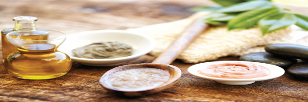

Preservatives in Natural Cosmetics
Why are preservatives necessary?
The risk of using preservatives in your products is far less than the risk of not using them..

The simple fact is - if a product has water in it, then it needs a preservative. if you see a product with water listed—but no preservatives—that should immediately raise a red flag. The microbes that can infect your unpreserved cosmetic skin cream primarily include bacteria, mold, and yeast. In small quantities they don’t represent much of a problem but when they multiply, look out. Studies show that bacteria, yeasts and fungi grow “copiously” in unpreserved creams and lotions. Is that something you want to rub all over yourself? Bacteria like Pseudomonas can cause all kinds of health problems including skin and eye infections, toxic shock, strep throat, and even food poisoning.
Insufficiently preserved cosmetics can cause severe infections (and even death!) in people with a weak immune system such as children, people with injuries, diabetics, or people who are undergoing certain treatment or therapies such as chemotherapy or radiotherapy.
Product preservation has always been a challenge to the formulation chemist, but it is even more important and fundamental in natural and organic skincare products. The more natural ingredients we apply, the more “yummy food” we offer to micro-organisms. Natural products are more susceptible to microbial growth.
Your precious natural product, unless it is totally waterless (anhydrous: in case of oil blends, butters or balms), is the best medium for hundreds of micro-organisms to survive and to grow in. All of the following provide excellent food and growth conditions for bacteria, yeast and mould: High water content - Hydrosols - plant extracts and dried plants - Clays - Natural gums - An ambient temperature of storage and application - Ambient humidity (especially when the product is kept in the warm and humid bathroom) - A pH between 4,5-6,5. Ultimately, the risk from using preservatives is significantly lower than that of using unpreserved cosmetics.
Why do we add preservatives to our face and body scrubs that are anhydrous?
Because a scrub will be exposed to water! We preserve face and body scrubs with a gentle, mild eco - friendly preservative. Generally an anhydrous face or body scrub (without botanicals, powders, fruit, clay, tea, extracts, starches, etc) including mainly oil salt or sugar would not need a preservative as it would be self preserving. Some people believe that if there is salt or sugar in a skin scrub it should preserve the product but expert microbiologist advise that in an anhydrous product that contain dried botanical ingredients (including all oil+sugar/salt scrub) where water may be introduced to the product or the product is used in a humid bathroom then a preservative is advisable. Whether there is a need for a preservative is dependent on many factors and it is very formula dependent.Our anhydrous face cleansing balm and face polish do not contain salt or sugar and they have the addition of dried botanicals which microbes and yeast love, so if water is introduced bacteria, moulds & yeasts in general grow in the presence of water, so it is even more important to use a gentle ecocert approved preservative. Only our body scrub contains salt with lots of added dried botanicals so we air on the side of caution and add a minimum quantity of ecocert approved natural preservatives because you never know how the end user will contaminate the product. And besides, I know that I dip my wet hands into my face and body scrubs in the shower all the time - I do dry them off, but there's water everywhere and some of it get into the jar! The introduction of water to an unpreserved skin product is the big bad worry when making bath and body products that are used in the shower. Preservatives protect our customers.
We don't need to use preservatives in anhydrous products (products where water is not added during manufacturing), if they do not come into contact with water by the consumer. We can use an anti-oxidant like Vitamin E to retard the rancidity of the oils and butters, if we wish, but we don't need to use a preservative.
Barmy Skincare Myths People Believe.
Myth 1: If you can’t pronounce an ingredient, it probably isn’t good for you. Just because an ingredient has a name that is hard to pronounce, doesn't mean you should put it in the "unsafe" category. “Chemicals are systematically named based on the composition and structure of atoms in the molecule, and often there are numerous interchangeable names for a chemical. For example, vitamin C can also be referred to as 2-oxo-L-threo-hexono-1,4-lactone-2,3-enediol.” read more..